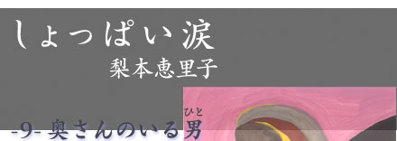
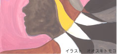

|  | |
| 「主人と別れてほしいんです」 目の前の女の人は、私の目を見てはっきりとそう言った。 |
 |
|
とてもきれいな人。私と同じショートカットだけれど、クリーム色のノースリーブから出た手は私よりずっと白くて細い。 「おねがい」 しぼりだすような声でその人は言って、私に頭を下げた。そして顔をあげると、真剣な瞳で私の返事を待っている。 私は慌てて横を通りすぎたウェイトレスや、窓から見える景色に目をそらせた。それでもすぐに視界が揺らぐ。 奥さんに呼び出された時から、こういう話になることはわかっていた。でもやっぱりここでこんな形で終わらせたくないという思いがこみあげてくる。奥さんがもっと嫌な人だったら良かったのに。目の前の女の人は、とてもきちんと切実に私に思いをぶつけてきて、それにＮＯと言えるほど私の気持ちは強くなかった。 「わかりました」 私はうつむいたまま、セ−ラ−服のすそをぎゅっとつかんでそれだけ言った。「ありがとう」女の人はそう言うと、伝票をつかんで去っていく。 おそるおそる顔をあげると、店の入口の近くで彼女は会計をしていた。私と目が合うと、軽く頭を下げる。嫌な奥さんだったら良かったのに。もう一度そう思う。ピンと伸びた背筋や手足が、私にはとてもまぶしかった。 私が彼女の旦那さん、藤崎先生と出会ったのは半年前のこと。高校３年生の春休みから通い始めた大手予備校で、数学の先生をしていたのが彼だった。たぶん一目惚れに近いものだったと思う。 中学生くらいから、私は年上の男の人にひどく弱かった。年上と言っても１つや２つじゃだめで、ひとまわり以上離れている人。そして言葉ではうまく説明できないけれど自分のなかで条件があって、それを満たした男の人。そういう男の人に見つめられたり、「がんばったね」と褒められたりすると、じ−んと心が温かくなる。わんわん泣いて、自分を全部さらけ出したい気持ちになる。それは同年代の男女の友達や、血のつながりがある人や、女の人ではだめで、とにかくうんと年上の男の人でないと、心が反応しなかった。自分ではどうしてそうなのかわからない。でももしかしたら、あんまり認めたくないけれど、両親と一緒に生活したことがないっていうのが、どこかで関係しているのかもしれない。 藤崎先生は私のその条件にぴったりあてはまった人で、会うたびに惹かれていった。毎週授業が終わった後は、必ず講師室へ行って質問したりおしゃべりしたりする。あっという間に教師と生徒の関係をこえてしまった。 「エリさんはさ、」 先生はふざけて私をそう呼んだ。 「俺とどうしたいの」 私は先生の顔を見てのんびり答える。 「別に……、何も考えてないです」 ２人で何回この会話をしただろう。私は本当に何も考えていなかった。初めて奥さんのいる人と一緒にいたけれど、よく言われるような「奥さんがいる人をたまたま好きになっただけ」だとか、「奥さんと別れてほしい」だとか、「不倫はいいとこどり」だとか、そんなことはどうでも良かった。先生の前でなら本気で泣ける。それだけが私にとって大切なことで、あとは全部ぼんやりとしていた。 先生と寝たのも、一回だけ。あとはこの半年、会うたびにごはんを食べて、先生が好きなつくし公園で散歩をした。つくし公園は都心から車で１時間くらいのところにあって、真ん中に小高い丘がある公園。道路近くのベンチに２人で座って、その丘を眺めていると心の中がプツンと音をたててきれる。受験勉強が楽しくない、「ただいま」と帰った時に家に誰もいない……いろんな思いがうずまいて、気づいたら泣いている。先生は私が泣くと、「また泣いてる」と言って呆れた顔をした。私はその顔が好きだった。そしてそんな顔をしても、泣いている間ずっと手を握ってくれているところも。 でも先生はいったい私のどこがよくて、一緒にいるんだろう。不思議に思って一度だけ聞いたことがある。 「なんかね、ほっとするから」 手のひらの中に石ころを集めて、それを丘に向かって投げながら先生が言った。 「家庭と予備校の往復だと、肩の力を抜く時がなくてさ。ここにくるとほっとする」 「それって、私といる意味あるんですか」 私が口をとがらせて言うと、先生がこちらを向く。 「あるよ。一緒だからほっとするんだよ」 めずらしく真剣な口調で先生が言った。 でも、よく聞く不倫カップルのような、お互いの真剣な気持ちを確認しあったことはなくて、だから私は奥さんに何も言えなかったんだと思う。私が別れないと言って、奥さんと子ども２人いる先生の人生を背負うことなんてできない。そこまでの覚悟はない。でも先生と二度と会わない決心もつかなかった。先生と会えなくなって泣き場所を失ったら、たぶん私はおかしくなる。 そこまで考えたら身体が勝手に動いて、私は予備校へ向かった。 私も先生も携帯を持っていない。だから連絡をとるなら、先生の授業の予定表を見てその校舎へ行くしかなかった。今日は夏季講習だから、お茶の水にいるはず。もう日はかなり傾いていて、私は急ぎ足で講師室へ向かう。 トビラを開けると、他の先生は授業に出払っているのか、先生が一人机に向かっていた。 「藤崎先生」 声を出した瞬間、自分が何のためにここにきたのか、何も考えていなかったことに気づいた。藤崎先生がふりむく。いつもと変わらない顔で「よう」と、手をあげる。その顔を見たら、だめだった。やっぱりまだこの人の側にいたいと思う。 「聞いたよ。昨日会ったんだって」 机に視線を戻しながら、低い声で先生が言う。奥さんの切実な瞳が蘇って、胸が苦しくなった。 「きれいな人ですね」 笑顔をとりつくろって言うと、先生は苦笑いをしてこちらを見た。 「普通もっと違うこと言うでしょ。奥さんと私と、どちらをとるの、みたいな」 何て言おうか考えてると、先生が突然言った。 「ね、京都行こうか」 「えっ、京都？」 驚いて聞き返すと、先生がうなづく。 「そう。行ったことある？」 「……修学旅行ぐらい」 右手で持っていたペンを離して、先生が私の手をつかむ。そっと引き寄せられた。 「あれ、エリさん、生まれはどこだっけ」 「名古屋。そのあと、広島、静岡、で、東京。関西はあんまり行ったことないかな」 「一番好きなところは？」 「名古屋だと思う。生まれた場所だから、気持ちが帰りやすい」 「そっか。俺の場合、それが京都なんだよね。京都の大学行ってたんだけどね、竜安寺の石とか、南禅寺の目の前の山が好きでさあ。なんか見てると気持ちがリセットできるんだ血血よ」 こちらを見上げた先生の目がすごく優しくて、私は少しイライラしながら言った。 「何が言いたいの。それはつくし公園じゃだめなんですか」 「怒るなよ。つくし公園は京都の代わりみたいなものかな。……なぁ、怒るなってば」 つかんだ私の手をぎゅっと握って、先生が言う。私はその手を振り払った。 「わかんない。別れたいってこと？」 「違うよ。気持ちをリセットしたいだけ」 先生と見つめあった。心は泣いているのに、涙が出てこない。たぶん昨日会った奥さんの瞳が私に涙を流させないんだと思う。 一瞬、唇が軽く触れた。先生が私の頭をくしゃくしゃとなでる。 私はうつむいたまま、無言で講師室を出た。外に出た瞬間、先生との思い出が心にうずまいて、座りこんでしまう。もうダメだと思った。私がどうあがいても、先生とは終わってしまう。私たちは普通の恋人たちのように何かを築いてきたのではなくて、２人で一緒にいる空間を大事にしてきただけだから。奥さんが現れたことでもう同じ空間は築けないから。終わりにするしかなかった。そしてこのままじゃ、２人の関係と一緒に自分もダメになりそうな気がした。 翌日、私は予備校を辞めて、そして志望大学を都内の大学から京都の大学に変更した。自分でもどうしてそんなことをしてしているのか、わからない。先生への気持ちを断ち切れなくて、でももう先生には会えなくて、一番近くにいられる場所を選んだのかもしれない。 半年後に無事、京都の大学に合格して、私は竜安寺の近くに住んだ。その間、先生とは一度も連絡をとっていない。先生からは一度だけうちに手紙がきて、きちんともう一度話そうと書いてあったけど、そんなことしたら自制ができなくなりそうだったから返事をせずにしまってある。 ある夕方、友達と一緒に南禅寺に行くことにした。お寺の中に入り、急な階段をのぼると、外に出られた。目の前に山が広がっている。外は蒸し暑いのに、そこだけは風が気持ち良く流れていた。何百年も、数えきれない人がこの景色を見ていたのかと思うと、長かった時間が短く感じて、胸が痛んだことが笑いだしたい気持ちになる。ここで気持ちをリセットした先生が、近いようでとても遠くなった。 下に降りて寺から出て、公衆電話へ向かった。予備校へ電話して、半年前に別れたきりの先生を呼び出してもらう。 「もしもし」 電話口から聞こえる先生の声が、とても懐かしかった。「先生、私、京都にいるんだ」ぽろりとその言葉が口をついて出ると、お天気雨みたいに涙がぽろぽろこぼれた。先生と散歩したり、セックスしたり、食事したり、笑ったりしたことが急速に思い出になっていく。 「先生、今度、奥さんと南禅寺を見に来なよ」優しく言ったら、先生が小さな声で「うん、そうする」と応えてくれたから、電話を切った。 とてもすがすがしい気持ちになって、私はもう一度南禅寺にもどる。近くを探索していたら小川を見つけて、どんどん進んでいくと駅までの裏道を発見した。その道は古さと新しさが混在していて、何だか胸がワクワクする。京都もけっこう悪くない。明日からいっぱい探索しよう。 振り返ると、南禅寺がどっしりとこちらを向いて構えていた。人間が作った、何百年も変わらないものが後ろにある。その事実は私をとても安心させて、これからこの街でたくさん泣けるような気がした。 梨本恵里子（なしもと・えりこ） 1978年生まれ。フリーライター |